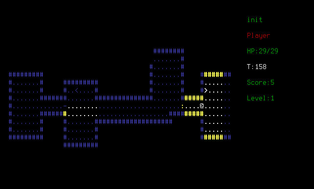

This game is unfinished so I will be very glad for any help. If you want to playtest you can download last revision from git and try to play it. 
You can run this in console to play CutlassRL:
$ python ./main.py
Windows users should install python and just double-click main.py.
GNU GPL 3
See COPYING.
You always can email me if you found bug or want me to add some feature.
You can download this project in either zip or tar formats.
You can also clone the project with Git by running:
$ git clone git://github.com/initrl/CutlassRL